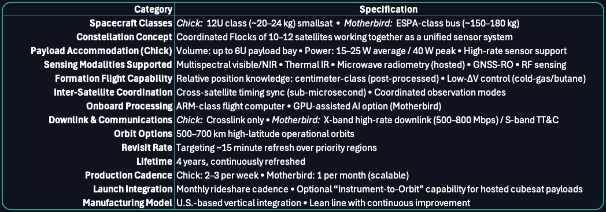

A New Architecture for Orbit
Weatherwave combines coordinated smallsat flocks, a modern production line, and frequent launch opportunities to deliver resilient, high cadence sensing for weather, environmental events, and national security.

Architecture at a Glance
The diagram above shows the high level Weatherwave concept. A larger service spacecraft leads a group of smaller satellites that fly in a coordinated pattern around it as they all orbit Earth. Each flock is one unit of sensing, communications, and control within the larger constellation.
A Constellation Built From Flocks
As can be seen above, Weatherwave is not built from single spacecraft. The constellation is built up of independent small satellites (colloquially referred to as "birds" throughout the industry) arranged in "Flocks" of 8-12 "Chicks" (12U cubesats) formation flying around a "Motherbird" (ESPA-class spacecraft.) Each Flock operates as a flagship class system in its own right. Taken together, many Flocks create resilient global coverage.
Motherbird and Chicks
At the center of each flock is a larger satellite that carries power, data, and communications for the group. Around it fly smaller satellites that carry sensors, instruments, and specialized capabilities. The group is designed so that the parts work together as one system, not as separate vehicles that simply pass through the same orbit.
Cooperative Smallsats
Traditional smallsats act alone. Weatherwave flocks are designed to observe scenes as coordinated teams, with multiple view angles and multiple sensing modes. This cooperative approach supports better calibration, richer environmental measurements, and more reliable detection of changes on the ground.
Built to Scale
The flock pattern is designed to be repeatable. Once the first flock is proven, the same production, test, and integration flow can be used to build many more. This allows the constellation to grow from a few early flocks into a global network without redesigning the architecture each time.
Cadence, Coverage, and Responsiveness
Weatherwave’s architecture is built for operational tempo. It is designed to deliver frequent revisits over priority regions, continuous improvement through new flocks, and the ability to field new instruments on meaningful timelines.
Frequent Revisit
Multiple flocks in carefully designed orbits provide refresh intervals measured in minutes over selected regions rather than hours. This cadence supports environmental monitoring, disaster response, and national security missions that require up to date situational awareness.
Iterative Constellation Growth
New flocks are added over time as manufacturing capabilities improve. Each new flock can carry updated sensors and improved subsystems while remaining compatible with the existing architecture. Once the formation has reached capacity, earlier Flocks are deorbited, making room for new state-of-the-art flocks. This allows the constellation to evolve without waiting for a once per decade replacement.
Instrument to Orbit in Weeks
Weatherwave’s production concept is built around frequent launch opportunities. When an instrument meets the agreed specifications, it can be integrated, tested, and flown on the next available mission. This enables instrument to orbit timelines measured in weeks rather than years, within the limits of mission assurance and safety requirements.
Technical Highlights
The Weatherwave architecture is rooted in established practice, but it is organized in a way that supports continuous learning and improvement. The points below summarize some of the core design ideas.
Orbit and Geometry
Orbits and fleet geometry are chosen to provide useful coverage patterns for both environmental and security missions. Flocks are placed so that they can support high latitude weather phenomena, mid latitude population centers, and key regions of interest for national security customers.
Cooperative Sensing and Fusion
Weatherwave is designed to support multi angle and multi mode sensing, with data combined across satellites and over time. This approach supports improved calibration and deeper insight into environmental and human activity patterns, compared to single instrument approaches.
Production and Integration
The same underlying design is built many times in a vertically integrated line. Standardized interfaces and repeatable test processes shorten build and integration cycles. This supports predictable cost, schedule, and risk for each new flock.
Concept-Level Constellation Specifications
Notional performance targets for early Weatherwave Flocks. Values are conceptual and subject to refinement during detailed design.
Where This Architecture Leads
Weatherwave’s goal is to provide a national scale sensing system that can adapt as quickly as conditions and priorities change. The same architecture that supports early weather and environmental missions can grow to serve broader defense, civil, and commercial needs over time.
For a deeper discussion of how this architecture supports specific missions, visit our Government Solutions and Commercial Solutions pages.